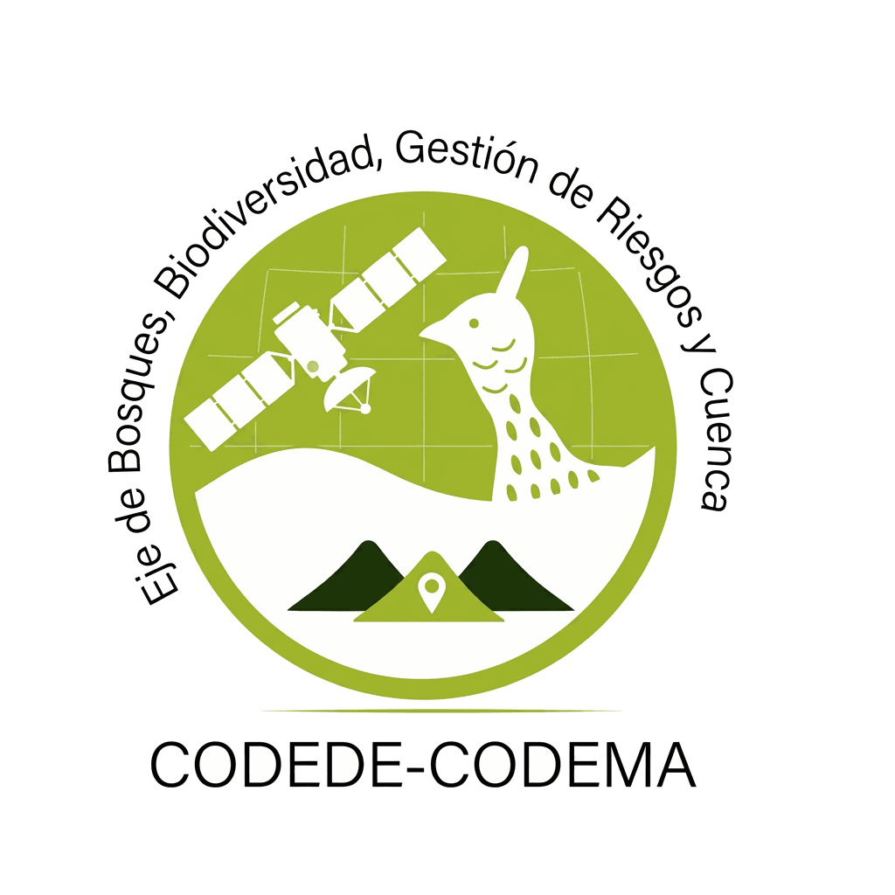

El Eje de Bosques integra imágenes satelitales multitemporales, modelos ecológicos y datos de campo para transformar píxeles en conocimiento territorial. Cada capa que ves en esta plataforma fue procesada, clasificada y analizada por el equipo del Eje para apoyar la gestión, planificación y conservación del bosque en Sololá.

Explora, analiza y descarga — todo a partir de datos ecológicos procesados por el Eje de Bosques.
Visor SIG interactivo con capas de fenología forestal y biomasa aérea en resolución de 30 m. Incluye análisis ecológico avanzado por municipio, KPIs, gráficas estadísticas y modo de impresión PDF con cajetín cartográfico.
Abrir GeoportalReportes por municipio con indicadores de biomasa, carbono y diversidad estructural. Formato listo para MARN, INAB, reportes REDD+ y documentos de planificación de la CODEMA. En desarrollo.
PróximamenteDetrás de cada capa hay un flujo técnico que el Eje mantiene para que los datos lleguen con rigor científico y utilidad territorial.
Para que los indicadores ecológicos tengan contexto de gestión, el Eje los interpreta junto con estas unidades territoriales:
Las capas se publican como GeoJSON y se usan para recorte espacial y estadísticas por zona, permitiendo reportes comparables entre periodos y municipios.
El Eje no solo mapea el bosque — analiza su estructura, dinámica y fragmentación para apoyar decisiones de gestión con evidencia territorial.
El módulo permite evaluar el estado actual del bosque y su dinámica temporal por municipio y microcuenca. La lectura ecológica que genera el Eje identifica zonas de alta biomasa, bosques fenológicamente estables y áreas con fragmentación crítica para orientar intervenciones de conservación y reforestación.
Lectura ecológica territorial preparada por el Eje para apoyar la planificación institucional: "cuánto bosque, de qué tipo, con qué biomasa y qué tan conectado", con indicadores listos para reportar ante MARN, INAB y compromisos REDD+.
El Eje aplica análisis geoestadístico para que los datos ecológicos vayan más allá de la visualización y apoyen decisiones con fundamento técnico.
La geoestadística permite al Eje responder si la distribución de biomasa y cobertura responde a un patrón aleatorio o si existe agrupamiento significativo vinculado a gradientes altitudinales, microcuencas o zonas de intervención histórica. También resume la dispersión espacial y la autocorrelación de los indicadores ecológicos para orientar la planificación territorial.
Estos análisis apoyan la interpretación del Eje, pero no sustituyen inventarios forestales de campo ni validaciones locales de cobertura.